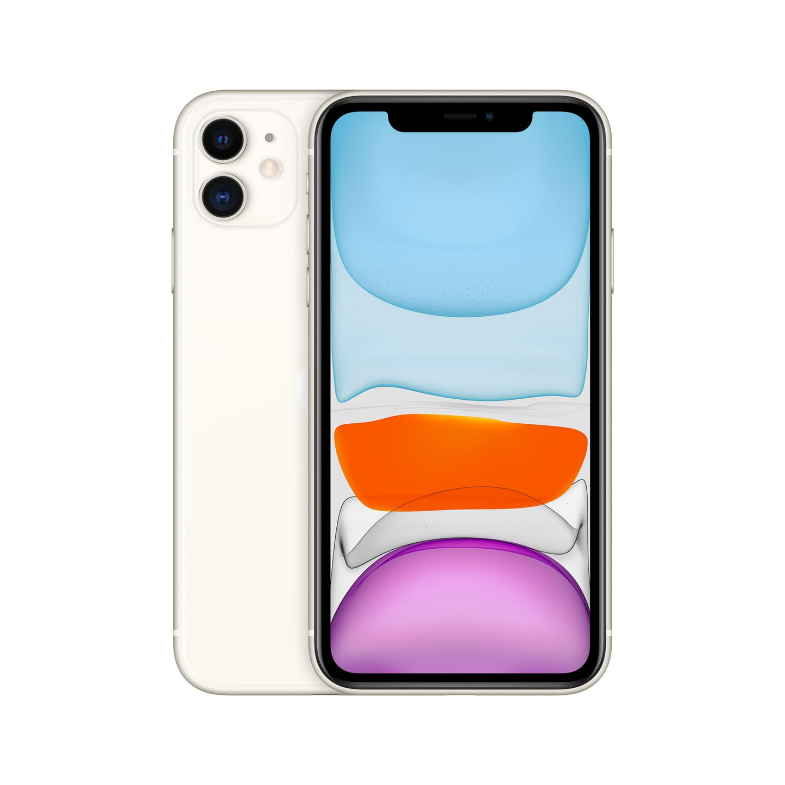
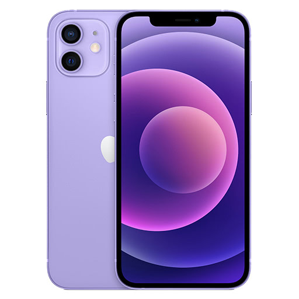
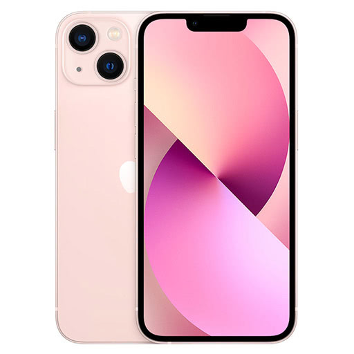
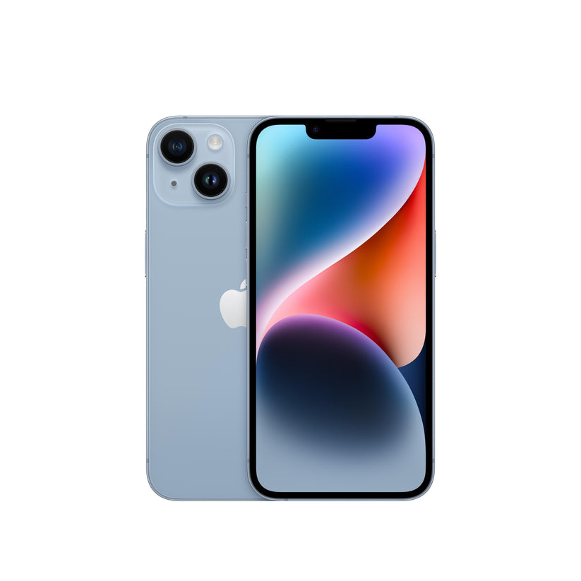

KRISTECH
EXPLORE!

IPHONE 11
The iPhone 11, along with the iPhone 11 Pro, uses Apple's A13 Bionic processor, which contains a third-generation neural engine. It has three internal storage options: 64 GB, 128 GB, and 256 GB. It also has 4 GB of RAM.
₱21,000


IPHONE 12
The iPhone 12 has Display. Super Retina XDR display. 6.1‑inch (diagonal) all‑screen OLED display. 2532‑by‑1170-pixel resolution at 460 ppi. HDR display. True Tone.
₱26,000

IPHONE 13
The iPhone 13, along with the iPhone 13 Pro, uses Apple's A13 Bionic processor, which contains a third-generation neural engine. It has three internal storage options: 64 GB, 128 GB, and 256 GB. It also has 4 GB of RAM.
₱30,000

IPHONE 14
The iPhone 14, along with the iPhone 14 Pro, uses Apple's A13 Bionic processor, which contains a third-generation neural engine. It has three internal storage options: 64 GB, 128 GB, and 256 GB. It also has 4 GB of RAM.
₱39,000

|  |
 |
 |